How to play
Guard the Gallery is planned to offer two game modes: a single-player mode and a local multi-player mode. Unfortunately Versus Mode is not yet available.
Select Story Mode from the main menu to start playing the single-player levels.
Continue lets you continue from the level you last played or start from the beginning if this is your first time playing.
Select Level lets you select and replay your favorite levels in the story mode.
The aim of the game is to guard a gallery by placing guards/cameras. Each camera type has its specific field of view. In a level, the budget and available camera types are listed on the right side of the screen. Click on a camera type and then click inside the gallery to place it at that position. Click and drag a camera to reposition it or click and drag the hightlighted circle to change the direction it is facing. A level is completed when one can oversee all of the gallery with the placed cameras, while not exceeding the budget. After completing the level, you can either continue to the next one or replay the level if you were not able to collect all three stars. Stars are rewarded as follows:
 : You have completed the level, but you spent the entire budget.
: You have completed the level, but you spent the entire budget.
: You managed to complete the level, but the solution was more expensive than necessary.
: You have completed the level using the least amount of resources possible.
Geometric concepts
In geometry, a polygon is a closed figure defined by a certain amount of points and line segments between them such that one contiguous region is enclosed. This game is based on the geometry of polygons and their intersections/unions.
More specifically, it is inspired by the Art Gallery Problem, which is the problem of finding a set of guards which cover a polygon entirely. We describe the layout of a gallery as a 2D polygon with n points, being the corners of the room. By placing cameras (in essence planes, half-planes, quarter-planes) one must cover the entire gallery. Of course one cannot see through walls, so we must be able to compute the intersection of those planes with our gallery polygon to see what the camera can really overlook. This fact also implies that the region a camera can overlook is again contiguous.
In the case where there are multiple cameras deployed, we want to know what the total overlooked area is. Therefore we must also be able to compute the area of two (generally overlapping) polygons.
Algorithms
The game mainly relies on two geometric algorithms and one data-structure, which are described in the detail below.
Doubly-Connected Edge List
A doubly-connected edge list (DCEL) is a data-structure often used to describe a decomposition of a plane. It holds describes the relations between points, line segments and faces. If we consider the decompoisition as a graph, the points are represented by vertices and the line segments by edges. Since each edge borders two faces, edges are further split in half-edges, one in each of the two directions of the line segment.
As the name suggests, the half-edges form a doubly linked list, i.e. each half-edge points to its predecessor and to its successor. Further, each half-edge contains pointers to its origin vertex, the face it is defining as well as its twin half-edge. Vertices contain a pointer to one of the half-edges originating from that vertex as well as its position as a 2D vector. Faces have only a pointer to one of their defining half-edges. Additionally, all entries are given two fields for arbitrary payloads. A tag field is used to store permanent information associated with that entry and a temp field is used to store temporary information, such as flags or states used in specific functions.
For convenience, all entries of the DCEL are further contained in lists, one per entry type. This allows, for instance, easier iteration over all half-edges regardless of which face they belong to. Due to the relatively small DCEL sizes in the game, convenience was chose over the slightly larger memory footprint.
Visibility Polygon
An essential part of the game is obviously computing which part of the gallery each camera can see. The resulting shape is called the visibility polygon of the point representing the position of the camera. To compute the visibility polygons we employ a typical angular sweep algorithm. While the algorithm would normally have a complexity of order O(n log(n)) using an appropriate status data-structure, our implementation has a complexity of order O(n²) due to time constraints. Once again, due to the low number of vertices/edges n, the run-time difference is marginal.
As the first step of the algorithm, all vertices are sorted by their angle relative to the direction the guard is facing. To account for collinear points, vertices with the same angle are further sorted by their distance from the guard. Afterwards, the vertices are traversed in the sorted order. For each vertex a half-line starting at the guard and passing through that vertex is intersected with all edges bordering the "main" face (i.e. visible part of the level, unlike holes) to find the closest intersection to the guard. If that intersection is closer to the guard, then the regarded vertex is not visible and nothing has to be done. Otherwise, firstly the number of consecutive collinear points is counted. Then, the current, and closest collinear, vertex is assigned assigned one of three categories depending on the position of its two incident half-edges. Examples of the three cases are illustrated below, where the red dots indicate the current vertex and the green dots represent the guard.

If the current vertex is of type 1, then the visibility of the guard is obviously blocked by it, so the vertex is added to the visibility polygon and any further collinear vertices are skipped. If the vertex is of either type 2 or type 3, a linear search is performed to find the first collinear vertex of a different type closer to the guard than the previously computed closest intersection. If such a vertex is found, it is considered to block visibility, so it is part of the visibility polygon. If the search did not yield a result, the closest intersection point takes its place instead. The order in which the original vertex and the result of the search are added depends on the type of the closest vertex. Then, once again, the iteration skips to the next non-collinear vertex and repeats the same process.
Due to the nature of the algorithm, guards with limited field of view angles can be considered by defining a minimal and a maximal angle for the guard. When iterating over the vertices, all vertices with angles outside of this interval can be ignored as they will definitely not be visible. However, when stepping over each of the boundaries of the interval, an additional point must be added to the visibility polygon, if there is no vertex at that specific angle.
Union Computation
In order to check if a level is completed, we must determine what the ratio of guarded to total area of the polygon is. The guarded area is the area of the union of all visibility polygons. Since those are generally overlapping, we cannot simply add the individual areas. Instead, we compute the union explicitly and then determine its area. While computing the union of simple polygons in itself is not trivial, matters are further complicated by the fact that the union of two visibility polygons is in general not a simple polygon anymore, but can contain disjoint polygons and holes.
In order to simplify the algorithm as much as possible, we consider a binary union operation instead of computing the union of all polygons at once. Thus, for each visibility polygon but the first one, a union operation with an intermediate result is performed to get the complete union. Accordingly, the input is assumed to consist of, firstly, a polygonal shape possibly containing multiple disjoint faces with holes and, secondly, a simple polygon. We will refer to the former as poly1 and as poly2 to the latter.
The first step of the algorithm is computing the intersections of the edges bordering visible faces of poly1 with the edges of poly2. Each of the participating edges is assigned a balanced binary search tree which stores information on its intersections sorted by their position on the respective edge.